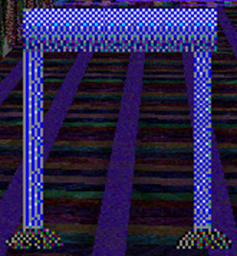
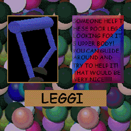

"Leggi" is the 1st Prize replacement in "Garrett's Funny!!!! Animal Game!"(/"GFAG").
Aliases
Leggi, Legs, Poor Legs, Upper Body's legs, Upper Body's other half.
Appearance
Leggi appears as a poorly modeled pair of legs. It wears blue pants and black shoes.
Gallery


Trivia
- Leggi cannot speak.
- No one in the Playhouse realizes that Leggi is Upper Body's missing legs.
- Leggi dislikes being alone.
- Pretty much everyone in the Playhouse is somewhat scared of Leggi.
- Leggi actively avoids Upper Body because it enjoys being it's own being.
Poster Description
"SOMEONE HELP THESE POOR LEGS LOOKING FOR ITS UPPER BODY! YOU CAN GUIDE AROUND AND TRY TO HELP IT THAT WOULD BE VERY NICE!!!!!"
Return to Main Page